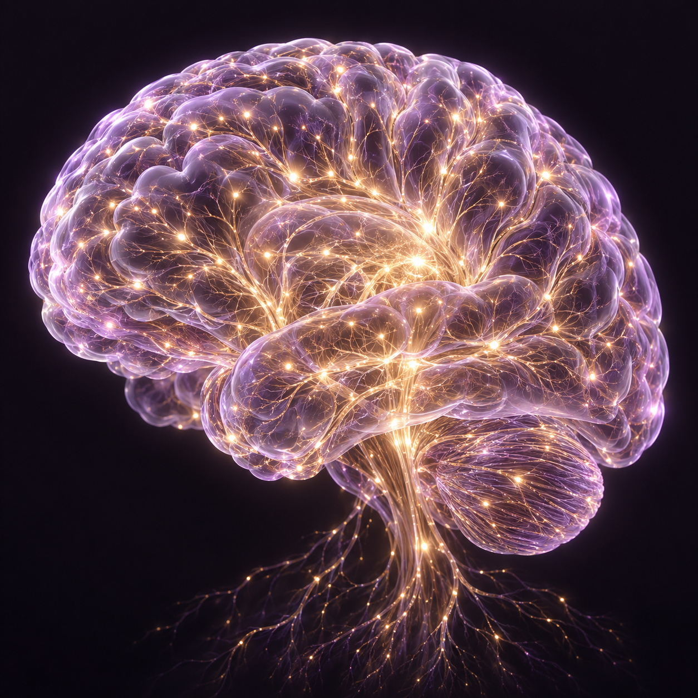

MENTORING AGENT
매번 달라지는
멘토링 피드백에
기준을 만들다
판단 기준을 Skills로 구조화해,
멀티 Agent와 사람 검수로 운영했습니다.
반복 업무에 기준을 남기는 멘토링 Agent 설계YUJIN FLOW
판단 기준을 Skills로 구조화해,
멀티 Agent와 사람 검수로 운영했습니다.
다섯 단계로 정리했습니다.
피드백이 느리다는 현상을 넘어, 품질을 보증하기 어려운 진짜 문제를 찾습니다.
멘토가 매주 제출물을 읽고 판단하고 피드백을 만드는 실제 일을 봅니다.
수집, 분석, 작성, 검수까지 반복되는 업무의 흐름을 펼쳐봅니다.
규칙 처리와 AI의 일을 구분하고, 역할 분리의 이유와 중단 조건을 정합니다.
실행하고 검수한 뒤, 기준을 고쳐 다른 입력으로 다시 확인합니다.
경험이 적은 사람에게 조언과 도움을 제공하고,
일이나 학습에서 발전할 수 있도록 지원하는 활동.
경험 속 판단을, AI가 읽을 수 있는 기준으로 꺼냅니다.
결과물은 있지만 사용자 테스트 기록은 없다.
만들기는 했지만, 실제 문제를 해결하는지는 확인하지 못했다.
목표 사용자 3명에게 사용하게 하고, 막힌 지점을 기록한다.
새로운 것을 배우기 위해, 더 이상 유효하지 않은 과거의 습관이나 지식을
의도적으로 내려놓고 바꾸는 과정입니다.
시간이 오래 걸린 이유는, 품질을 유지하려고 같은 판단을 매번 다시 했기 때문입니다.
수강생마다 결과물이 달라서, 피드백 품질을 유지하려면 매번 다시 읽고 판단해야 했습니다.
판단 기준이 문서로 정리되지 않아, 머릿속 기준을 매번 다시 꺼내야 했습니다.
PDF와 Slack 진단, 고친 이유가 함께 남지 않아 다음 검수 기준으로 이어지지 않았습니다.

# 멘토링 판단 기준
01 어디서 막혔는가02 무엇을 먼저 해야 하는가03 어디까지 도울 것인가과제를 읽고, 부족한 점을 짚고, 다음에 할 일을 알려준다.
제출물과 지난 피드백을 비교하고,
주장을 뒷받침하는 근거를 찾습니다.
목표와 현재 상태의 차이를 짚고,
지금 검증할 행동 한 가지를 정합니다.
스스로 실행할 수 있게 안내하고,
수강생의 사정과 예외를 확인합니다.
같은 진단을 공유하면서, 작성과 검수를 분리하기 위한 역할 구성입니다.
업무 분배 → 공통 진단 전달 → 결과 취합
내용을 읽고 핵심 문제 판단
분석을 리포트로 구성
실행할 행동을 짧게 전달
원문과 두 결과를 대조
Agent는 담당자, Skill은 그 담당자가 반복해서 쓰는 업무 방법입니다. 형식과 누락은 규칙으로, 맥락 해석은 AI로 처리합니다.
전문 Agent를 도구처럼 호출하고,
결과를 받아 총괄이 응답을 완성합니다.
다음 담당 Agent가 실행을 이어받고,
이후 대화와 응답을 맡습니다.
제출물과 기준 문서의 누락
빠진 자료 보완과 작업 재개
근거 부족, PDF와 Slack의 다른 진단
수강생의 맥락과 예외를 보고 최종 판단
수정된 PDF와 Slack 초안
내용과 표현을 확인하고 발송 승인
설명용 재구성 화면입니다. 실제 실행에서는 위임 대상, 읽은 Skill, 반환 결과, 수정 횟수를 로그에서 확인합니다.
이 두 조건을 원문 근거와 대조해 Agent의 성공과 실패를 판단했습니다.
PDF와 Slack이 같은 핵심 문제를 말하는가?
멘티가 다음에 무엇을 할지 구체적으로 알 수 있는가?
자동 검수 통과는 발송 승인이 아닙니다. 표현, 예외, 개인정보는 멘토가 마지막으로 확인합니다.
설명용 가상 사례 / 실제 실행 성과가 아닙니다
PDF는 “검증 기준 부족”, Slack은 “아이디어 구체화 필요”라고 안내합니다. 멘티에게 서로 다른 행동을 요구합니다.
“PDF와 멘트는 공통 진단 파일의 핵심 문제와 다음 행동을 사용한다. 다른 판단이 필요하면 총괄에게 반환한다.”
다른 제출물로 실행해 두 결과를 원문과 대조합니다. 일치 여부, 수정 횟수, 검수 시간을 실행 기록에 남깁니다.
입력과 기준 버전을 남깁니다. PDF와 멘트를 원문에 대조하고 실패한 조건을 기록합니다.
수정 이유를 검토해 Skill에 반영합니다. 새 제출물과 누락 자료도 넣어 동일한 기준과 중단 조건을 확인합니다.
진단 불일치, 누락, 수정 횟수를 확인합니다. AI 처리뿐 아니라 사람 검수와 재작업 시간까지 비교합니다.
데이터를 정리하고, 필요한 도구만 연결하고, 작은 업무 하나에서 Plan, Do, See를 반복합니다.
Agent가 매번 다시 묻지 않도록 자료의 역할과 저장 위치를 먼저 정합니다.
멘티 과제가 들어오면 역할별 Agent가 Skills에 따라 작업합니다.
자동 검수와 사람 승인을 거쳐 수정 이유를 다음 실행의 기준으로 남깁니다.